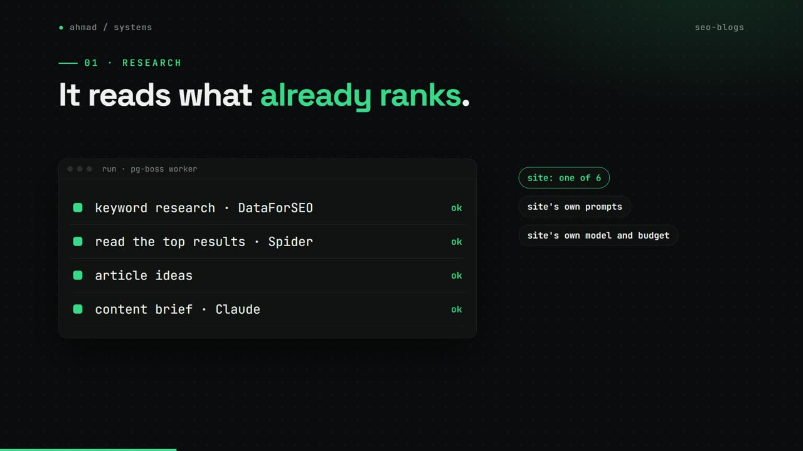
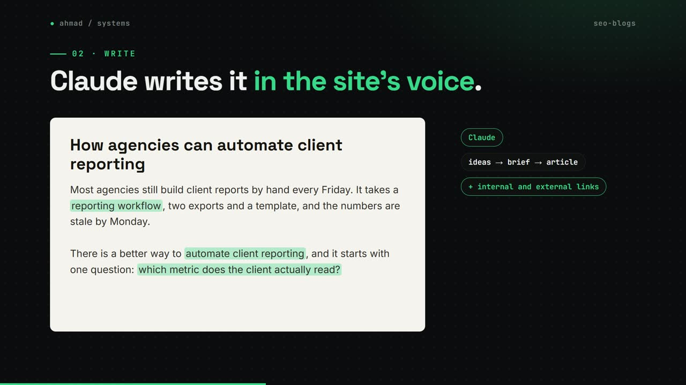
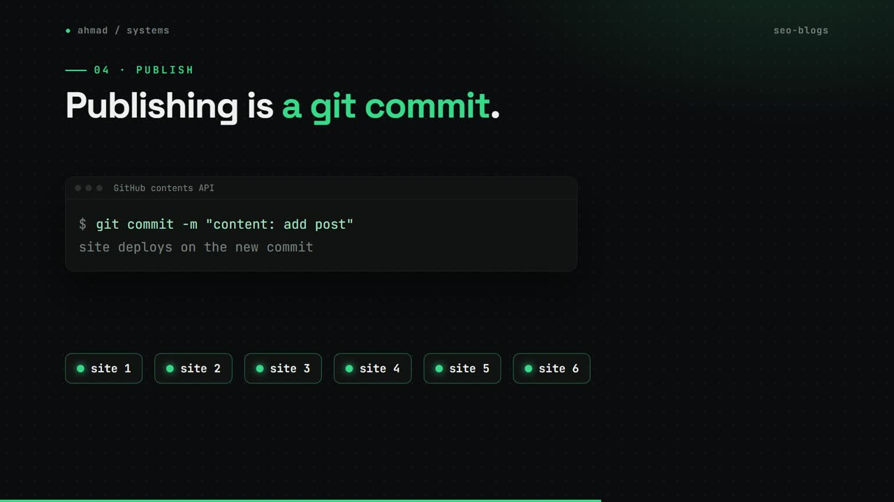
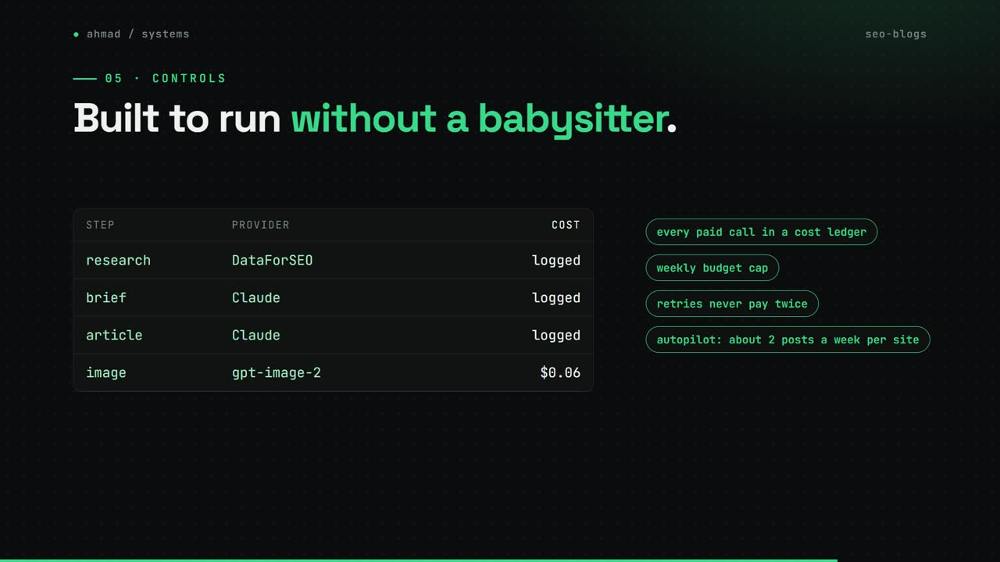

Soch SEO Blogs App
One keyword in, a researched and illustrated blog post out, for any of six websites.
my role Designed and built it: 89 of 110 commits. Rebuilt from a 152-node n8n workflow.
The problem
Soch publishes blogs on six websites through a 152-node n8n workflow with three approval gates. I rebuilt it as an app so it can be tested, watched and changed safely, with a clear cost for every post.
How it works
- Pick a site and a keyword. The worker researches it with DataForSEO and by reading the top results.
- Claude writes ideas, then a brief, then the article, using that site's own prompts, model and budget.
- Internal and external links are added, then images: Claude vision scores stock photos and gpt-image-2 fills any gaps.
- A person reviews the draft in the studio, and posts can be translated.
- Publishing is a commit to the site's GitHub repo, which deploys the site.
- An autopilot drafts about two posts a week per site inside a weekly budget, and retries never pay for the same step twice.
What changed
- 723automated tests
- 152n8n nodes replaced by one app
- 6websites it publishes to
- $0.06per generated image
What I built
- The Next.js app, the Postgres schema (21 Prisma models) and a pg-boss background worker with 20 job queues.
- A cost ledger that records every paid call, and the weekly budget cap.
- 723 automated tests across 66 test files.
Stack
- Next.js
- TypeScript
- PostgreSQL
- Prisma
- pg-boss
- Claude API
- gpt-image-2
- DataForSEO
- Railway
Stills



